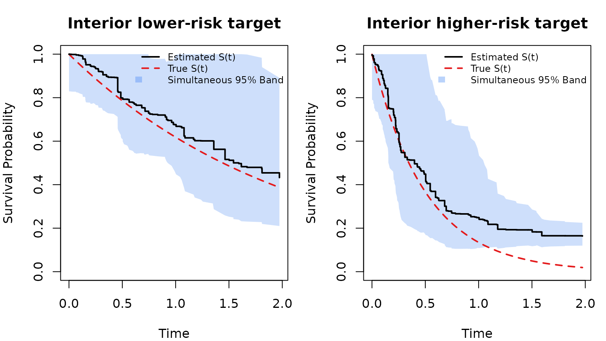

Survival Confidence Band - Tutorial (RLT)
Ruoqing Zhu
Last Updated: July 02, 2026
Source:vignettes/articles/confidence-interval.Rmd
confidence-interval.RmdOverview
This page demonstrates how to construct simultaneous confidence bands
for individual survival curves predicted by RLT. The example uses the
smoothed covariance approach in get.surv.band().
Two details matter for a sensible visualization:
- Target points should be inside the observed predictor domain, especially for the important variables.
- The displayed time range should avoid the far tail where very few training observations remain at risk.
Data
We simulate right-censored survival data from a proportional hazards model. The first and third predictors carry signal; the rest are noise.
Target Points
We choose two target points at interior quantiles of the important
variables X1 and X3. The remaining variables
are fixed at their training medians.
target_base <- apply(X, 2, median)
testX <- matrix(rep(target_base, each = 2), nrow = 2, byrow = TRUE)
colnames(testX) <- colnames(X)
testX[, 1] <- quantile(X[, 1], probs = c(0.35, 0.65))
testX[, 3] <- quantile(X[, 3], probs = c(0.35, 0.65))
rownames(testX) <- c("Interior lower-risk target", "Interior higher-risk target")
testX[, c(1, 3)]
## X1 X3
## Interior lower-risk target -0.5695469 -0.3250708
## Interior higher-risk target 0.4737417 0.4440657Fit and Predict with Variance
We use var.mode = "matched" for variance estimation.
This prepares covariance estimates on the cumulative hazard scale, which
is the scale used by the confidence-band calculation.
fit <- RLT(
X, Y, Censor, model = "survival",
ntrees = 1000, mtry = min(p, 10), nmin = 5,
split.gen = "random", nsplit = 3,
resample.prob = 0.8, resample.replace = FALSE,
importance = FALSE, verbose = FALSE,
ncores = 1,
var.mode = "matched",
param.control = list(split.rule = "logrank")
)
RLTPred <- predict(fit, testX, var.est = TRUE, ncores = 1)Restrict to Supported Follow-up Times
The fitted object can return predictions over the observed event-time
grid, but the far right tail has little data support. For this example,
we only display the region t <= 2.
risk_set <- vapply(RLTPred$timepoints, function(t) sum(Y >= t), integer(1))
plot_time_max <- 2
plot_id <- which(RLTPred$timepoints <= plot_time_max)
if (length(plot_id) == 0) {
plot_id <- 1
}
list(
Plot_Time_Range = "t <= 2",
Minimum_At_Risk_in_Plotted_Range = min(risk_set[plot_id]),
Number_of_Plotted_Timepoints = length(plot_id)
)
## $Plot_Time_Range
## [1] "t <= 2"
##
## $Minimum_At_Risk_in_Plotted_Range
## [1] 24
##
## $Number_of_Plotted_Timepoints
## [1] 140Simultaneous Confidence Band
get.surv.band() with approach = "smoothed"
constructs a simultaneous confidence band using a smoothed low-rank
approximation of the covariance matrix.
SurvBand <- get.surv.band(RLTPred, alpha = 0.05, approach = "smoothed", k_rank = 10)
par(mfrow = c(1, 2), mar = c(4, 4, 3, 1))
for (i in seq_len(nrow(testX))) {
tp <- RLTPred$timepoints[plot_id]
S <- pmin(pmax(as.numeric(RLTPred$Survival[i, plot_id]), 0), 1)
truth <- exp(-xlink(testX)[i] * tp)
b_lower <- pmin(pmax(as.numeric(SurvBand[[i]]$lower)[plot_id], 0), 1)
b_upper <- pmin(pmax(as.numeric(SurvBand[[i]]$upper)[plot_id], 0), 1)
plot(tp, S, type = "n", ylim = c(0, 1),
xlab = "Time", ylab = "Survival Probability",
main = rownames(testX)[i])
polygon(c(tp, rev(tp)), c(b_lower, rev(b_upper)),
col = rgb(0.23, 0.51, 0.96, 0.25), border = NA)
lines(tp, truth, col = "#E41A1C", lwd = 2, lty = 2)
lines(tp, S, type = "s", lwd = 2)
legend("topright",
legend = c("Estimated S(t)", "True S(t)", "Simultaneous 95% Band"),
lty = c(1, 2, NA), lwd = c(2, 2, NA),
col = c("black", "#E41A1C", NA),
fill = c(NA, NA, rgb(0.23, 0.51, 0.96, 0.35)),
border = c(NA, NA, NA),
bty = "n", cex = 0.75)
}
Optional Rank Selection
The smoothed approach can also choose the rank by cumulative
eigenvalue proportion instead of a fixed k_rank:
SurvBand_prop <- get.surv.band(
RLTPred, alpha = 0.05,
approach = "smoothed",
k_mode = "proportion",
k_prop = 0.95
)You can increase nsim for stability at the cost of
runtime.